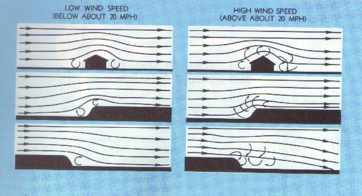

A confined area is an area where the flight of the
helicopter is limited in some direction by terrain or the presence of
obstructions, natural or manmade. for example, a clearing in the woods,
a city street, a road, a building roof, and so on, can each be regarded
as a confined area.
Barriers on the surface and the surface itself may
interfere with the smooth flow of air, resulting in turbulence. This
interference is transmitted to upper air levels as larger but less
intense disturbances. Therefore, the greatest turbulence is usually
found at low altitudes. Gusts are unpredictable variations in wind
velocity. Ordinary gusts are dangerous only in slow flight at very low
altitudes. The pilot may be unaware of the gust, and its cessation may
reduce airspeed below that required to sustain flight due to the loss
in effective translational lift. Gusts cannot be planned for or
anticipated. Turbulence, however, can generally be predicted. Turbulence
will be found in the following areas when the wind velocity exceeds
10 MPH (fig. 81):

Figure 81.- Eddy currents are formed when the wind flows
over uneven ground or obstructions.
1--Near the ground of the downwind side of trees,
buildings, hills, or other obstructions. The turbulent area is always
relative in size to that of the obstacle, and relative in intensity to
the velocity of the wind.
2--Near the surface on the immediate upwind side
of any solid barrier such as trees in leaf, and buildings. This condition
is not generally dangerous unless the wind velocity is approximately
20 MPH or higher.
3--In the air, above and slightly downwind of any
sizable obstruction, such as a hill or mountain range. The size of the
obstruction and the wind velocity govern the severity and height to which
the turbulence extends.
GENERAL RULES FOR CONFINED AREA OPERATIONS
Some general rules can be stated that apply to helicopter operations in any type of confined area. The following are some of the more important ones to consider regardless of weather such areas are enclosed, or are slopes or pinnacles.
1. Know the direction and approximate speed of the
wind at all times, and plan landings and takeoffs with these wind
conditions in mind. This does not necessarily mean that takeoffs and
landings will always be made into the wind, but wind must be considered,
and many times its velocity will determine proper avenues of approach
and takeoff.
2. If possible, plan a flightpath over areas
suitable for forced landings in case of engine failure. It may be
necessary to choose between an approach which is crosswind but over
an open area and one directly into the wind but over heavily wooded
or extremely rough terrain where a safe forced landing would be
impossible. Perhaps the initial phase of the approach can be made
crosswind over the open area and then a turn made into the wind for
the final portion of the approach.
3. Always operate the helicopter as closely to its
normal capabilities as possible considering the situation at hand. In
all confined area operations, with the exception of the pinnacle operation,
the angle of descent should be no steeper than necessary to clear any
barrier in the avenue of approach and still land on the selected spot.
The angle of climb, on takeoff, should be normal, or not steeper than
necessary to clear any barrier. Clearing a barrier by a few feet and
maintaining normal operating RPM, with perhaps a reserve of power, is
better than clearing a barrier by a wide margin but with a dangerously
low RPM and no power reserve.
4. Always make the landing to a specific point and
not to some general area. This point should be located well forward-away
from the approach end of the area. The more confined the area, the more
essential it is that the helicopter be landed precisely at a definite
point. This point must be kept in sight during the entire final approach.
5. Any large increase in elevation between the point
of takeoff and the point of intended landing must be given due
consideration, as sufficient power must be available to bring the
helicopter to a hover at the point of the intended landing. A decrease
in wind should also be allowed for because of the presence of obstructions.
6. When flying a helicopter near obstructions,
always consider the tail rotor. A safe angle of descent over barriers
must be established to ensure tail rotor clearance of all obstructions.
After coming to a hover, care must be taken to avoid turning the tail
into obstructions.
7. If possible, a normal takeoff from a hover should
be made when departing a confined area. However, if barriers of sufficient
height exist that would make this impossible, then a maximum performance
takeoff should be made.
A pinnacle is an area from which the surface drops
away steeply on all sides. A ridgeline is a long area from which the
surface drops away steeply on one or two sides, such as a bluff or
precipice. Barriers are not usually present on pinnacles or ridgelines;
but, if they are, a combination of pinnacle and confined area operations
may be necessary when operating into and out of such areas. That is, an
area may require a pinnacle-type operation during the approach and
landing, but if the strength of the wind dictates the takeoff path
and barriers exist under that path, a confined area-type takeoff may
be required when departing that area. Conversely, conditions and
terrain may justify a confined area-type approach into an area and a
pinnacle-type departure from that area.
The absence of barriers does not necessarily lessen
the difficulty of pinnacle or ridgeline operations. Updrafts, downdrafts,
and turbulence, together with unsuitable terrain in which to make a forced
landing, may still present extreme hazards.
General rules for pinnacle and ridgeline operations
The following are some of the more important rules to consider when conducting pinnacle or ridgeline operations:
1. If necessary to climb to a pinnacle or ridgeline, the climb should
be performed on the upwind side, when practicable, to take advantage of
any updrafts.
2. Load, altitude, wind conditions, and terrain features determine
the angle to use in the final part of an approach. A steeper-than-normal
approach may be used when barriers or excessive downdrafts exist. A
shallower-than-normal approach may be used when there are no barriers or
downdrafts and when it is suspected that the helicopter cannot be hovered
out of ground effect. In this case, an approach to the surface may be
necessary.
3. The approach path to a ridgeline is usually parallel to that
ridgeline and as nearly into the wind as possible. If a crosswind exists,
remain clear of downdrafts on the leeward or downwind side of the
ridgeline. If the wind velocity makes the crosswind landing hazardous, a
low coordinated turn into the wind may be made just prior to terminating
the approach.
4. When making an approach to a pinnacle, avoid leeward turbulence and
keep the helicopter within reach of a forced landing area as long as
possible.
5. Since pinnacles and ridgelines are generally higher than the
immediate surrounding terrain, gaining airspeed on the takeoff is more
important than gaining altitude. The airspeed gained will cause a more
rapid departure from the area. In addition to covering unfavorable terrain
rapidly, a higher airspeed affords a more favorable glide angle and thus
contributes to the chances of reaching a safe area in the event of a
forced landing. If no suitable area is available, a higher airspeed will
permit a more effective flare prior to making an autorotative landing.
The primary purpose of the high reconnaissance is to determine the suitability of an area for a landing. In a high reconnaissance, the following items should be accomplished:
1--Determine wind direction and speed.
2--Select the most suitable flightpaths into and out of the area, with particular consideration being given forced landing areas.
3--Plan the approach and select a point for touchdown.
4--Locate and determine the size of barriers, if any, immediately around the area.
A high reconnaissance is flown at approximately 500
feet above the surface; however, a higher altitude may be required in
some helicopters. A general rule to follow is to ensure that sufficient
altitude is available at all times to land into the wind in case of engine
failure. This means the greatest altitude will be required when headed
downwind. A 45° angle of observation will generally allow the best
estimate of the height of barriers, the presence of obstacles, the size
of the area, and the slope of the terrain. Safe altitudes and airspeeds
should be kept within reach whenever possible.
The approach path should be generally into the wind
and over terrain that minimizes the time that the helicopter is not in
reach of a forced landing area. If by flying at an angle to the wind, a
forced landing area can be kept in reach, then do so. Having a forced
landing area available is more important than to fly directly into the
wind, especially if the wind is not too strong. The decision should be
made as to the type of approach that will be made. If at all possible,
a normal approach should be made; however, if there are high barriers,
a steeper approach will be required.
In the low reconnaissance, verify what was seen in
the high reconnaissance and check for anything new that may have been
missed. Check especially for wires, slopes, and small crevices because
these are especially difficult to see from a higher altitude.
A low reconnaissance begins shortly after entry to
the approach and ends at touchdown. During this time, objects on the
surface can be better identified and the height of barriers, if any,
better estimated. The view of the approach path is greatly improved.
The approach should be as close to a normal approach as possible. If
new information warrants a change in flightpath or angle of descent,
it should be made; however, if a major change in angle of descent is
required, a go-round should be made. If a decision to go around is made,
it should be done prior to losing effective translational lift.
If a decision is made to complete the approach, the
termination should normally be to a hover so the landing point can be
carefully checked before the landing is made. Under certain conditions,
however, it may be desirable to terminate the approach to the surface.
Whether terminating at a hover or on the surface, once the helicopter is
on the surface, operating RPM should be maintained until the stability of
the helicopter is checked to be of a secure and safe position.
Before takeoff, a ground reconnaissance is made to
determine the type takeoff to be performed, to determine the point from
which the takeoff should be initiated to ensure the maximum amount of
available area and, finally, how to best get the helicopter from the
landing point to the proposed takeoff position.
The first thing to check is the wind. If the engine
is running, walk a sufficient distance from the helicopter to ensure that
the downwash of the blades does not interfere. Dust or grass may be
dropped and the direction observed in which they are blown.
The next step is to go to the downwind end of the
available area and mark a position for takeoff so that the tail and main
rotors will have sufficient clearance from obstructions, if any, behind
the helicopter. A sturdy marker such as a heavy stone or log should be
used so it will not blow away.
If wind conditions and available area permit, the
helicopter should be brought to a hover, turned around, and hovered
forward from the landing position to takeoff position. Under certain
conditions, sideward flight to the takeoff position may be necessary.
If rearward flight is required to reach the takeoff position, reference
markers should be placed in front of the helicopter in such a way that
a ground track can be safely followed to the takeoff position and so
the pilot can see the marker for the takeoff position without going
beyond it.
{kind=link}